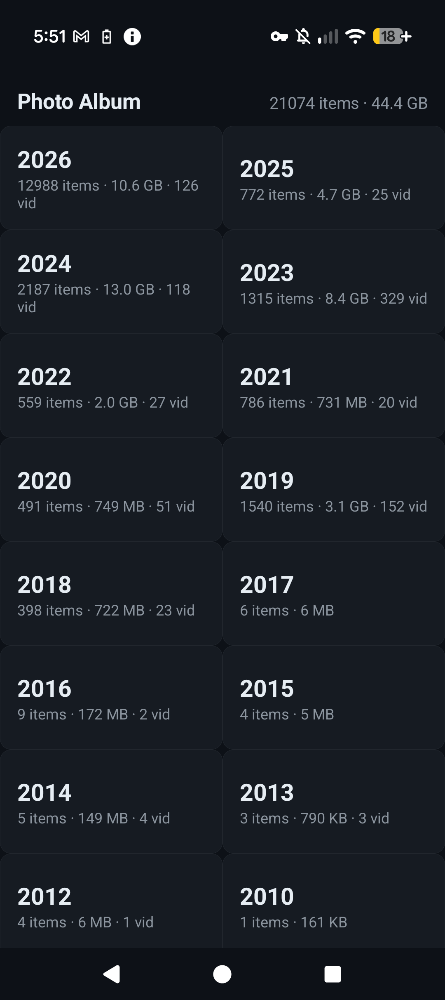
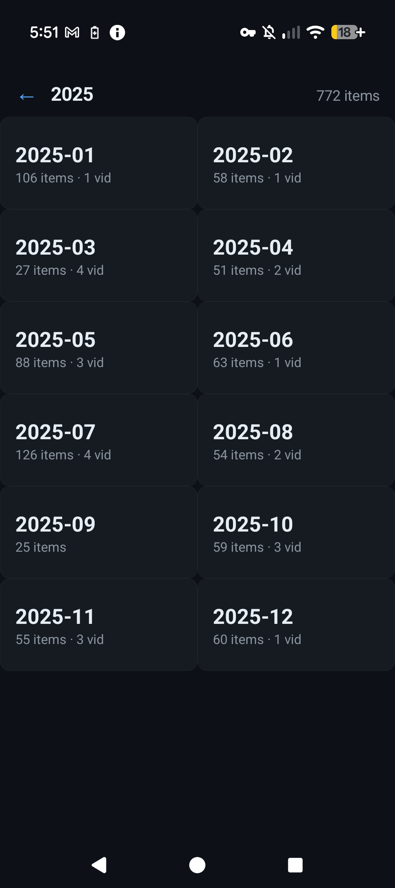

21,000 Photos, Zero Google: How We Built Our Own Photo Library
Hopes & Dreams — Sovereign Builds, Part 1
Google Photos had every photo we'd ever taken. Twenty-one thousand of them, going back to 2004. One day we decided we didn't want a tech company holding our life's memories any longer — so we pulled it all off Google, off the phone, and onto a server in our own house, and built a native Android app to browse it. No cloud, no tracking, no "enhanced images," no ads in your memories. Just our photos, on our hardware, that we control.
This is the story of how we did it — the architecture, the process, and the six bugs that nearly broke it. And at the end, a step-by-step you can follow to do the same thing with your own photos.
Why we did this
Google Photos is convenient. That's the whole problem. It means Google stores, processes, and can use your entire visual history — every vacation, every kid, every whiteboard. For a privacy-first household, that's a hard line.
The goal wasn't just "move my photos." It's a de-Google campaign: replace Google services one by one with sovereign apps we build and run ourselves. Photos is Phase 1. The endgame is a fully de-googled phone running only our own apps.
We set one iron rule before touching anything: verify before we delete. Nothing gets removed from Google or the phone until we've proven every single file is safely on our own server. (We'll come back to this — it's the part that makes the whole thing safe.)
Where we started (the numbers)
- 21,074 media files, ~44 GB, spanning 2004 → 2026
- 881 videos, the rest photos
- Oldest photo: a single image from 2004. The bulk is 2018–2026.
The library is the union of two sources: a Google Takeout export (13,827 files) and a direct pull from the phone (7,231 files). Here's the surprising part — only 107 files were byte-identical between the two. Google re-encodes photos in the cloud, so the "originals" in your Takeout are not the same files as the ones on your phone. We kept both (the union), so nothing was lost — we actually ended up with more than Google had.

The architecture (the part that makes it feel fast)
The naive approach — "download all 44 GB to the phone" — is terrible. It would take forever, eat all your storage, and every app open would wait on a multi-gigabyte transfer. Instead we built a three-tier caching system so opening the app is instant and it never balloons:
- Tier 1 — Metadata index (a few MB). A tiny JSON tree of years → months → counts. Loaded once, cached, refreshed on each sync. This is what renders the year and month screens instantly.
- Tier 2 — Thumbnails (~30–50 KB each). The grid shows only thumbnails. We pre-generate all 21,074 of them on the server (a one-time ~20-minute job), and the app caches them in an LRU disk cache on the phone. The grid loads fast from the first open, and re-opening a year you've seen is instant.
- Tier 3 — Full-res (on demand). Full resolution downloads only when you tap a specific photo. Videos stream with HTTP Range requests, so you can seek without downloading the whole file.
Net effect: opening the app = a tiny index plus thumbnails trickling in. No multi-GB download, ever. Offline, it shows whatever's already cached.

The server
A single-file Python server (the same pattern as our other home services), bound to a local port and tailnet-only — reachable only on our private Tailscale network, never the public internet. It exposes:
/api/tree— the year/month index/api/stats— library totals/api/list?y=&m=— the items in a month/img/<path>— full-res, Range-capable (for video seeking)/thumb/<path>— 512px JPEG, generated on demand and cached
It's published over HTTPS via tailscale serve, so the app talks to a private https://…/photo-album
URL. One real-world wrinkle: a few hundred files have messy names (~, +, =, leading spaces),
so the path matcher is relaxed but still runs a realpath containment check to block directory
traversal.
The app
Native Android (Kotlin), single-activity, programmatic UI (no XML layouts). It uses Coil for thumbnail/image loading (with an LRU disk cache) and ExoPlayer (media3) for video. The flow is Years → Months → Grid → Viewer. The viewer does pinch-zoom and pan for photos and in-app playback for videos. Every screen has pull-to-refresh.
How we built it (three sessions)
Session A — Storage + import. We built the import machinery: EXIF-date-based filing (photos
land in YYYY/MM/ by their actual capture date, not the file date), MD5 dedup, a manifest that
keeps the library 1:1 with reality, and an incremental phone-pull script. Then we ran the Google
Takeout import and the phone diff. Result: the 21,074-file union library.
Session B — Server + app. We wrote the Python server, pre-generated all the thumbnails, built the Android app (year → month → grid → viewer), and published it over the tailnet.
Session C — Video + daily sync. We verified video playback, then set up the daily sync: a timer that pulls new photos and videos from the phone to the server a few times a day, so new shots keep landing on our hardware automatically.
The war stories (the bugs that nearly broke it)
This is the good stuff — the parts that weren't smooth. Every one of these was a real bug we hit and fixed, and each one teaches something.
Bug 1 — Thumbnails wouldn't load (the big one). The grid showed empty cells and item counts, but no images; tapping a photo gave a black screen. We verified the entire server chain worked perfectly — thumbnails, full-res, and video Range all returned 200 over the tailnet. So the problem was in the app. We added logging and discovered the image loader's start callback never fired — the requests weren't even beginning. Root cause: the image library's default loader wasn't executing requests in this app. Fix: create an explicit image loader wired to the same network client that was already fetching our data successfully, and enqueue requests directly. Thumbnails and the viewer started rendering immediately.
Bug 2 — Photos opened zoomed-in, and you couldn't zoom out. The viewer used a matrix scale where "1" meant native pixel size, not "fit to screen." So a large photo opened showing only a corner, and you couldn't zoom out to fit. Fix: compute a "fit" scale (the image fits the view, preserving aspect ratio) and use it as the baseline; then the matrix scales about the origin and translates to center. Now photos open fit-to-screen, and zoom, pan, and tap all work.
Bug 3 — Content drew under the Android status bar. The app's top-left overlapped the system status bar — a mess of icons. Fix: apply the system window insets as padding on the root view, so content sits cleanly below the status bar and above the nav bar.
Bug 4 — All videos landed in 2026 (the sneaky one).
The year grid showed 881 videos in 2026 and zero in every other year — which looked wrong (we
definitely have videos from 2018, 2023, and so on). Root cause: the import script files photos by
their EXIF capture date, but videos usually lack that tag, so it fell back to the file's
mtime — which was the 2026 download date. So every video got dumped into 2026/10/. The fix:
a re-date pass that reads the date from the filename (camera videos are named like
20230911_185847.MP4 or VID_20181124_175042.mp4), with mtime as the last resort. It moved
803 videos back to their real years (2012–2025) and updated the manifest and thumbnails. Now
the grid shows videos across 2012–2026, where they belong.
Bug 5 — Photo and video thumbnails collided.
A photo and a video can share a base name (e.g. 20230911_185847.jpg and
20230911_185847.MP4 — the camera saves both). Thumbnails were named by the base name without
the extension, so the two files collided on one thumbnail file — and the video's frame overwrote
the photo's. 270 files were affected. Fix: include the file extension in the thumbnail name
(…/20230911_185847.jpg.jpg vs …/20230911_185847.mp4.jpg), so every file gets a unique
thumbnail. We migrated all 21,074 thumbs (renamed 20,529, regenerated the 545 colliding or
missing, deleted 270 orphans).
Bug 6 — Video thumbnails were all black boxes (two bugs in one).
Even after the re-date, every video showed a black placeholder box instead of a frame. Two
compounding bugs: (1) the thumbnail generator wrote to a temp file ending in .part, and ffmpeg
couldn't infer the output format from that extension — it silently produced nothing; (2) the
generator sought to the 3-second mark (-ss 3), but many clips are shorter than 3 seconds, so
the seek landed past the end and ffmpeg again produced nothing. The fallback (first frame) hit
the same .part bug. Fix: tell ffmpeg the format explicitly (-f image2) and seek to 1 second
instead of 3 (with a first-frame fallback for sub-second clips). We regenerated all 881 video
thumbs — 878 now show real frames, 3 are genuinely unplayable.
The result
A native app that opens instantly, browses 21,000 photos by year and month, shows thumbnails, opens full-res with zoom and pan, plays videos, and lets you share or delete in batches — all from our own home server. A daily sync keeps new photos and videos flowing to the server automatically. And because the library is the union of the Takeout and the phone, we have more than Google had.
The bigger picture (the de-Google campaign)
Photos was Phase 1. The queue is Drive → Keep → Calendar → Gmail → Maps. Every sovereign app gets a private repo from day one (backup and history); the ones with universal value — like this Photo Album — get polished and posted publicly for others to use. These builds are also the war stories for Hopes & Dreams: real, technical, honest.
The endgame is GrapheneOS on the Pixel 9 (officially supported through August 2031), running only our own apps. We accepted the tradeoffs: the smartwatch link goes away, and the AOSP camera replaces the Pixel camera. For us, that's a fair price for a phone that answers only to us.
How you can do this too (the reproducible process)
If you want your own sovereign photo library, here's the exact process, in order. None of this requires a big server — a Raspberry Pi or any always-on box with a few hundred GB works.
- Get your photos out of Google. Run a Google Takeout export for Photos (original quality). Download the zip. This is your cloud copy.
- Get your photos off the phone. Connect the phone over USB and
adb pullthe DCIM and Pictures folders. This is your original copy. (The two differ — Google re-encodes — so keep both.) - Import into a local library. Write a small importer that files each file into
YYYY/MM/by its EXIF capture date (fall back to the filename date for videos, then mtime), dedups by MD5, and writes a manifest (one JSON line per file) so the library stays 1:1 with reality. - Build a tiny server. A single-file Python server that serves the index, thumbnails, and full-res files. Bind it to a local port and make it tailnet-only (Tailscale) so it's never on the public internet. Add a realpath containment check so paths can't escape the library.
- Pre-generate thumbnails. One-time job: make a 512px JPEG for every image (PIL) and grab a frame from every video (ffmpeg). This is what makes the grid fast.
- Build the app. A native Android app (Kotlin) with a year → month → grid → viewer flow. Use an image library with a disk cache for thumbnails and a video player for playback. Point it at your server's HTTPS URL.
- Publish over the tailnet. Use
tailscale serveto expose the server over HTTPS on your private network. The app talks to that URL — no public exposure. - Set up a daily sync. A timer that re-pulls new photos from the phone a few times a day, so new shots land on the server automatically.
- Verify before you delete. Diff the phone and the server. Confirm every file is present and correct. Only then stop the Google Photos backup and delete the cloud copy.
- Keep it running. Let the sync run for a few days, watch it reliably grab new shots, and enjoy a photo library that answers only to you.
The whole thing is a few hundred lines of Python and a single Kotlin file. The hard part isn't the code — it's the discipline of verifying before you delete.
What's next
Let the daily sync run for a few days and watch it reliably grab new shots. Then stop the Google Photos backup, run the final diff, and delete the cloud copy. After that, on to the next Google service in the queue — Drive is up.
This is Part 1 of the de-Google series. The next war story: getting our files off Google Drive.